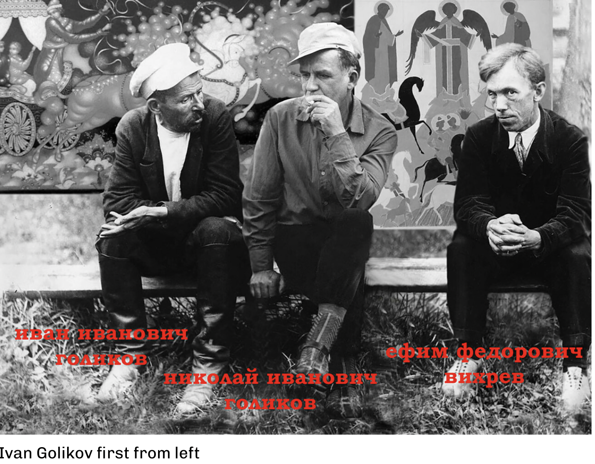

After the Russian Revolutin (1917), Palekh icon painters decided to paint art inspired by folk themes. After the October Revolution, the Palekh denizens faced a choice: to let their icon painting tradition perish or to adapt to the new conditions, when everything linked to the Orthodox Christian faith was being eradicated.
Ivan Golikov, one of the hereditary Palekh iconographer artists, after the Revolution and having come back from World War I, found himself in a country that had no place for icons. He worked with theater props and, in 1921, he painted his first papier-mache box.

Themes of Russian folk tales, the frog and the prince, the snow queen, Pushkin’s poetry, the czar’s golden cockerel, have remained the favored subjects, although some artists have ventured into political and patriotic themes.
The paints are also special, like for icon painting, and they’re called tempera paints. The artists make them themselves, mixing pigments with egg yolk and vinegar water. “The pigment powder is natural, a chemical one would rise to the surface because it’s no good. The yolk should not be fatty, so home-grown eggs won’t do, only store bought ones fit. It’s impossible to paint with heavy paints, as well as with watery ones. Artists determine how heavy paints are just by eyeballing it, from experience, regulating them with vinegar water – earlier they did it with kvass,” Shchirova explains.
The preparation of gold leaves, with which the painting is covered, also requires effort: gold wire is rolled into the thinnest sheet possible and then glued to the box; or gold is dissolved in gum arabic – the resin of wild Acacia tree. “This is a very complicated process. The finesse of the painting style is in the skill of painting with this dissolved gold. It’s unlikely there are craftsmen like that anywhere else in the world,” the artist says. The paint brushes are still, to this day, only made by the artists themselves – from squirrel tails, as Shchirova says: “The brushes are unlike those from the store – you can only see their tip through a magnifying glass. Such brushes are needed to thinly paint with gold.”
Back